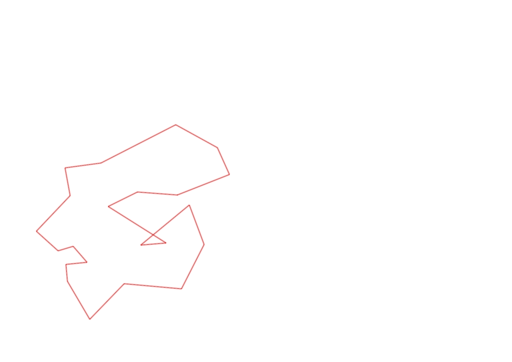
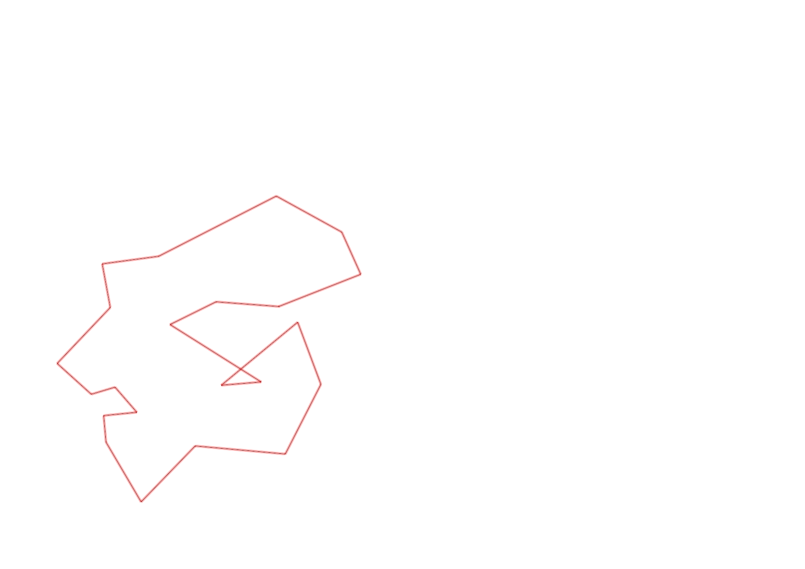

| Control |
Points |
Time Punched |
Distance |
Your Time |
Pace |
Place |
Fastest Time |
Median Time |
% Behind Fastest |
| 92 |
90 |
|
0.23 |
0:02:48 |
12:10 |
9 / 11 |
0:02:15 |
0:02:35 |
24% |
| 57 |
50 |
|
0.12 |
0:06:54 |
57:30 |
8 / 9 |
0:01:59 |
0:05:37 |
247% |
| 107 |
100 |
|
0.2 |
0:03:38 |
18:10 |
18 / 21 |
0:00:00 |
0:02:52 |
-% |
| 63 |
60 |
|
0.35 |
0:02:34 |
07:20 |
6 / 18 |
0:01:59 |
0:02:42 |
29% |
| 32 |
30 |
|
0.15 |
0:01:12 |
08:00 |
21 / 27 |
0:00:36 |
0:00:56 |
100% |
| 44 |
40 |
|
0.12 |
0:02:06 |
17:30 |
17 / 29 |
0:00:52 |
0:01:49 |
142% |
| 53 |
50 |
|
0.2 |
0:01:39 |
08:15 |
4 / 26 |
0:01:31 |
0:02:15 |
8% |
| 69 |
60 |
|
0.12 |
0:01:18 |
10:50 |
14 / 29 |
0:00:45 |
0:01:18 |
73% |
| 54 |
50 |
|
0.07 |
0:01:40 |
23:48 |
2 / 4 |
0:01:38 |
0:01:57 |
2% |
| 41 |
40 |
|
0.09 |
0:01:43 |
19:04 |
7 / 13 |
0:01:01 |
0:01:43 |
68% |
| 71 |
70 |
|
0.09 |
0:02:34 |
28:31 |
12 / 12 |
0:00:33 |
0:01:12 |
366% |
| 40 |
40 |
|
0.07 |
0:01:20 |
19:02 |
2 / 9 |
0:00:40 |
0:01:52 |
100% |
| 77 |
70 |
|
0.18 |
0:02:22 |
13:08 |
13 / 21 |
0:01:35 |
0:02:21 |
49% |
| 59 |
50 |
|
0.21 |
0:02:36 |
12:22 |
7 / 18 |
0:02:00 |
0:02:47 |
30% |
| 61 |
60 |
|
0.24 |
0:03:34 |
14:51 |
14 / 19 |
0:02:14 |
0:03:16 |
59% |
| 42 |
40 |
|
0.21 |
0:05:32 |
26:20 |
13 / 14 |
0:02:19 |
0:03:34 |
138% |
| 127 |
20 |
|
0.17 |
0:02:55 |
17:09 |
12 / 12 |
0:01:27 |
0:01:48 |
101% |
| 60 |
60 |
|
0.26 |
0:03:09 |
12:06 |
2 / 2 |
0:02:39 |
0:02:54 |
18% |
| 38 |
30 |
|
0.11 |
0:02:42 |
24:32 |
12 / 15 |
0:00:00 |
0:01:15 |
-% |
| 130 |
30 |
|
0.28 |
0:02:23 |
08:30 |
1 / 1 |
0:02:23 |
0:02:23 |
0% |
| 126 |
20 |
|
0.14 |
0:01:35 |
11:18 |
8 / 12 |
0:01:09 |
0:01:26 |
37% |
| Finish |
0 |
|
0.17 |
0:00:39 |
03:49 |
2 / 9 |
0:00:31 |
0:00:57 |
25% |
Total Distance Covered: 3.78km
Points Scored: 1060
Late Penalty: 0
Final Score: 1060
Total Time: 0hours 56minutes 53seconds
Efficiency: 280.42 points/km
 
